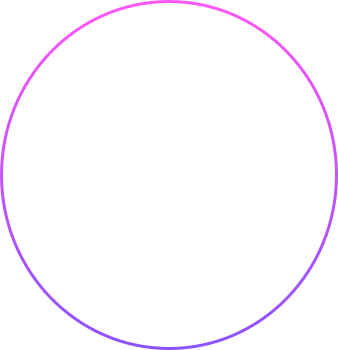

Minhas techs
Hard skills
- Inglês intermediário
- Experiência com metodologias ágeis
- Conhecimentos técnicos em linguagens de programação
- Conhecimento básico em design e experiência do usuário
Soft skills
- Criatividade
- Trabalho em equipe
- Pensamento analítico e inovação
- Gestão do tempo
- Resiliência
Experiência
Criando aplicações webs com diversas integrações (HTTPS / GraphQL) e validações.
Tive a oportunidade de liderar projetos e auxiliar o time, bem como compartilhar conhecimento.
Sempre estudando e adaptando o código para melhores versões.
Ainda atuando na área de QA mas obtendo conhecimento técnicos de frameworks SPA e práticas clean code, além da mentoria com devs.
Testes e verificações de qualidade nos processos e produtos finais.
Nesse tempo, aprimorei o olhar analítico e a capacidade para resolução de problemas.
Projetos
Aplicativo para auxiliar na alfabetização de crianças com foco em TDAH
22/07/2021
Este aplicativo foi usado para o trabalho de
conclusão de curso do IFMS.
Consiste em um aplicativo com a didática de um jogo para
auxiliar crianças na alfabetização, especialmente crianças com Transtorno do Défict de Atenção
com Hiperatividade (TDAH).
@diegovskrbm e @geordtl
Github+ Java
UFMS Farm
25/11/2024
Projeto acadêmico visando conscientizar a ODS 15
(Objetivos da ONU - Vida terrestre) de forma gamificada e divertida.
Foram implementados mecanismos que encerram o ciclo de vida da planta caso não seja
cuidada.
@xeanm28x e @geordtl
Itch.io+ Unity, C#, LibreSprite
Uber para idosos
15/06/2023
Projeto acadêmico com apenas o design criado a fim de
auxiliar o processo de locomoção para idosos. Contando com perfis de auxiliares no aplicativo,
garantindo mais segurança.
validado e apresentado em sala.
@chsabreu e @geordtl
Github+ HTML, CSS, JS
Humor diário
04/07/2025
Projeto acadêmico com o objetivo de registrar o humor
diário do usuário, permitindo acessar o histórico dos dias anteriores.
Integrado com Docker e requisição com Axios
@alisonfrd e @geordtl
Github+ Vuejs, Tailwindcss, Docker, SQLAlchemy, Flask
ZapBoard
30/05/2023
Projeto acadêmico com o objetivo de registrar entradas e saídas de uma empresa. Os indicadores são feitos com um cálculo em tempo real com os dados do banco.
@geordtl, @alisonfrd
Github+ Vuejs, Firestore